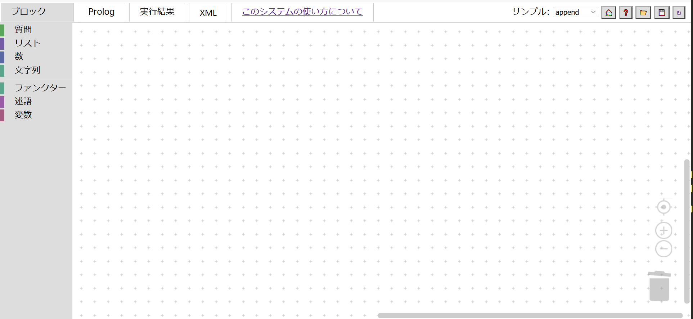
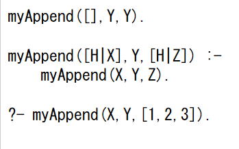
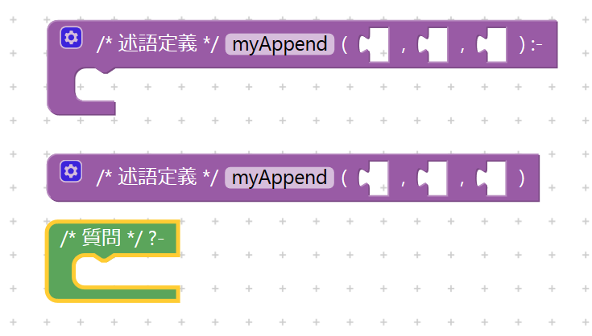
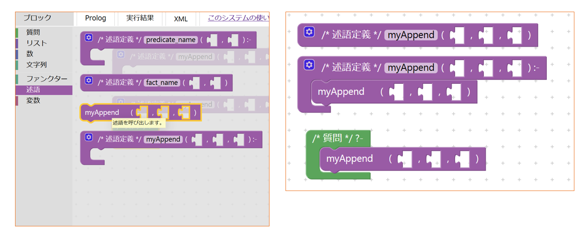
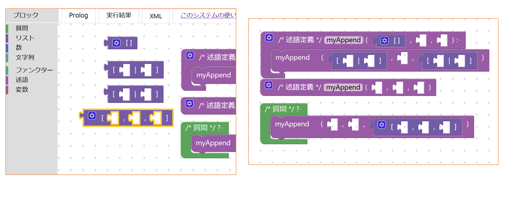
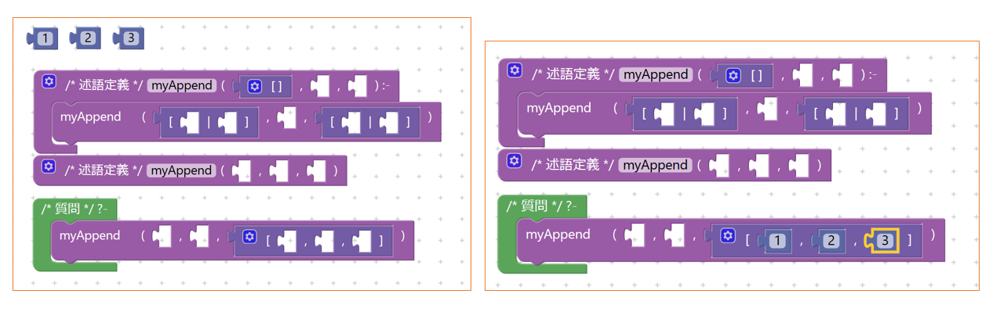
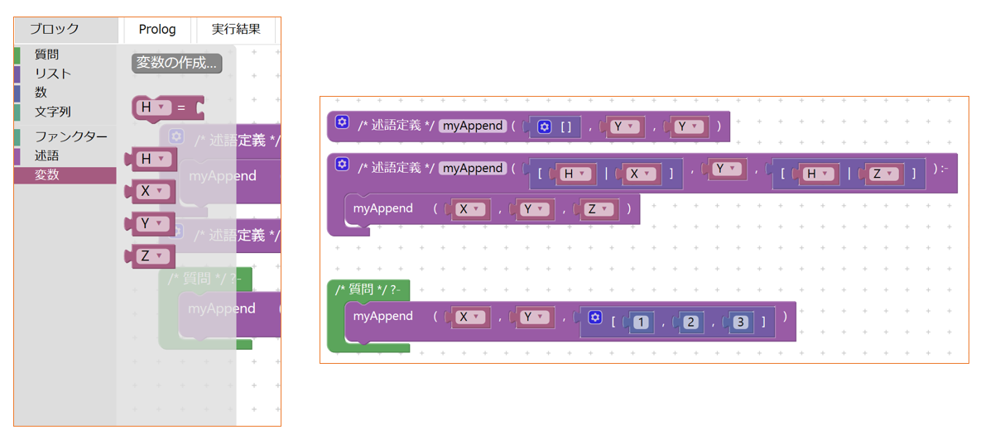
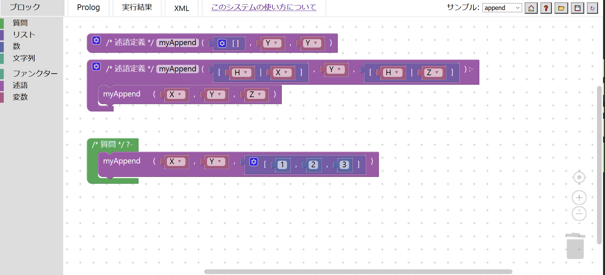

ブロックの組み立て方(Prolog編)
下図は、Blockly for Haskell のワークスペースにブロックが何も組み立てられていない初期状態です。
以下のPrologコードをBlocklyで組み立てます。
PrologコードをBlocklyで組み立てる手順
①述語定義ブロックの設置と引数の設定
ブロックメニュー部の述語カテゴリをクリックして、その一番上のブロックと上から2番目のブロックをワークスペース部にドラッグします。
そして、それぞれの入力フォームに「myAppend」と入力します(左図)。
次に、ブロックの左上部の歯車マークをクリックすると、小さなブロックメニュー部とワークスペース部が表示されます。
その小さなブロックメニュー部の引数ブロックを小さなワークスペース部の引数列ブロックに接続します。すると、述語定義ブロックの左辺にソケット(穴)が１つ増えたことが確認できます。(右図)。
②質問ブロックの設置 ブロックメニュー部の質問カテゴリをクリックして、その一番上のブロックをワークスペース部にドラッグします。
③述語呼び出しブロックの接続 ブロックメニュー部の述語カテゴリをクリックして、上から3番目の述語呼び出しブロックを2つワークスペース部にドラッグします(左図)。そして、1つのブロックを手順①で配置した上の述語定義ブロックの内側に接続して、もう一つを手順②で配置した質問ブロックの内側に接続します(右図)。
④リストブロックの接続 ブロックメニュー部のリストカテゴリをクリックして、1番上のブロックを1つ、上から2番目のブロックを2つ、一番下のブロックを1つワークスペース部にドラッグします(左図)。そして、右図のように4つのリストブロックを適切な位置のソケットに接続します。
⑤定数ブロック接続 ブロックメニュー部の数カテゴリから定数ブロックを3つワークスペース部に取り出します。そして、それぞれの入力フォームに「1」、「2」、「3」と入力します(左図)。 次に、右図のように空いたソケットに入力した定数ブロックを接続します。
⑥変数ブロックの接続 ブロックメニュー部の変数カテゴリの一番上の「変数の作成...」をクリックすると、画面の中央に入力フォームが出現します。 そこに「X」と「Y」と「Z」と「H」をそれぞれ記入します。すると、ブロックメニュー部の変数カテゴリに右図のようなブロックが用意されます。 そして右図のようにそれぞれのソケットに変数ブロックを接続していきます。
ブロックの完成図
下図は、前項の手順で組み立てたワークスペース部の完成図です。
